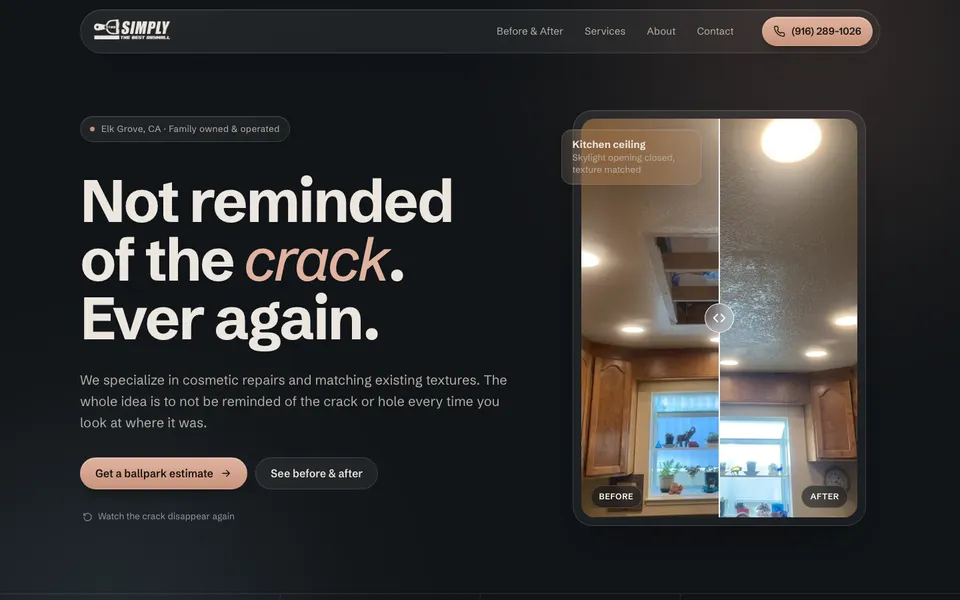
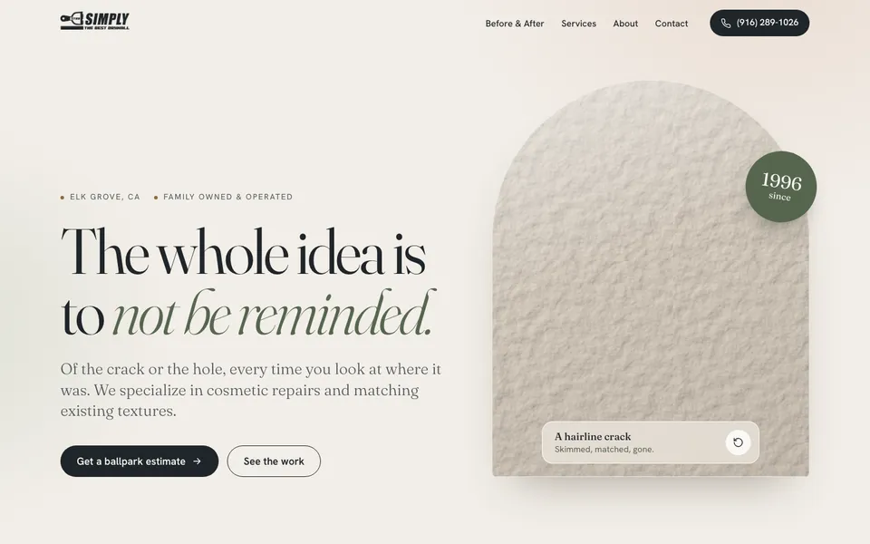
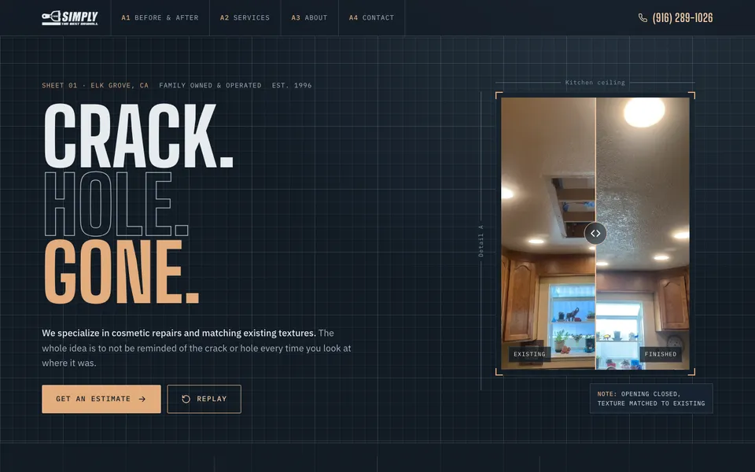
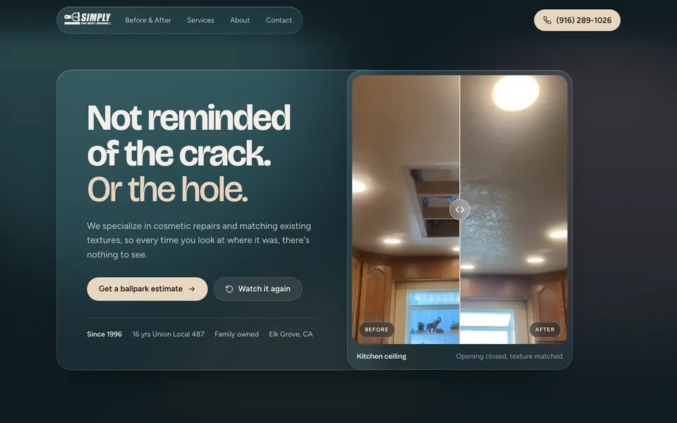
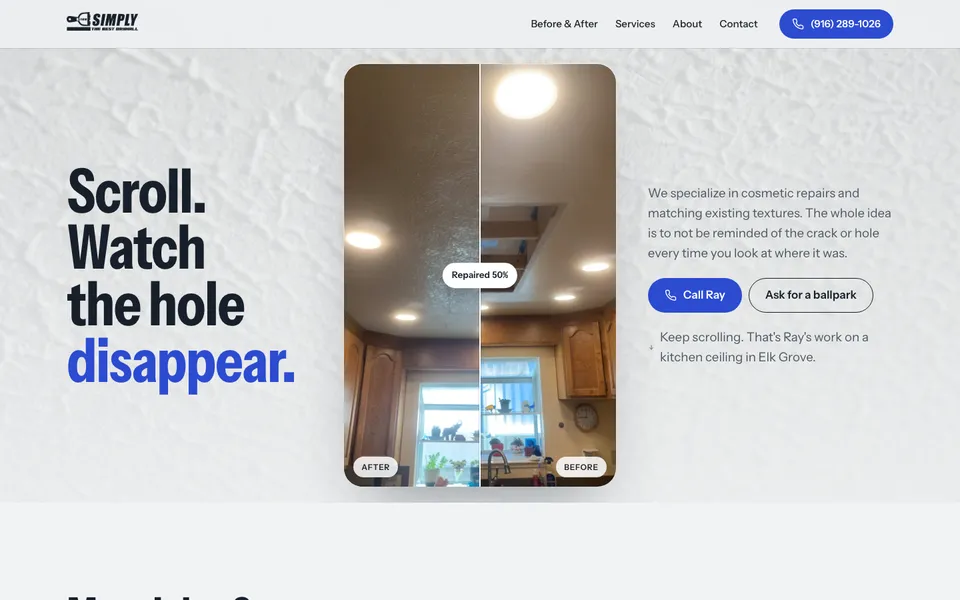
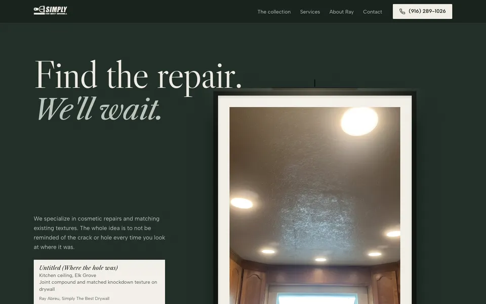
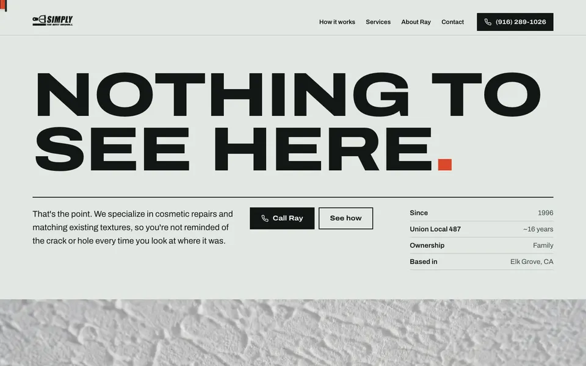
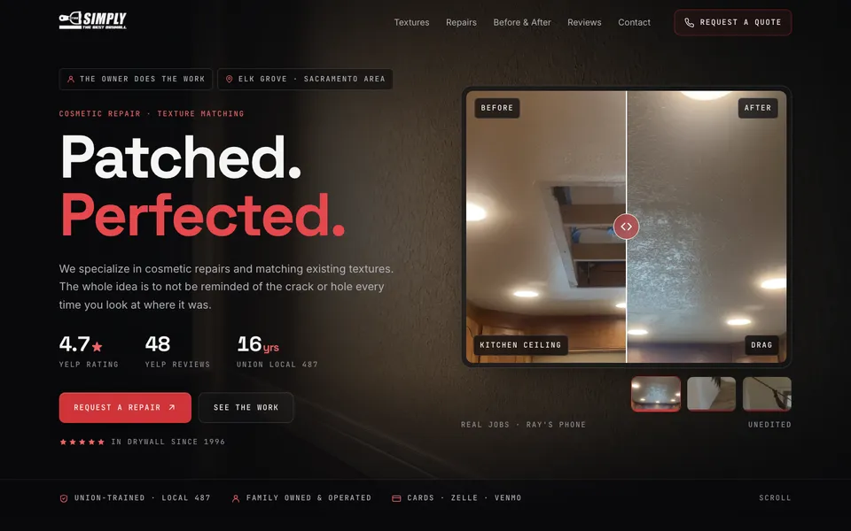

Eight landing page directions
One page each, built from your own words and Ray's own job photos. Option 4 is live today. Options 5 to 7 are new: each tells the same story with a different idea and one signature moment of motion.
Tip: open each demo on your phone too. Drag the line on any before/after photo to compare.

Option 1 · Modern & sleekGraphite & Clay
DarkDeep graphite with a warm clay accent, frosted glass panels and a slow ambient glow. The crack splits the headline letters, then the knife smooths them back together.

Option 2 · Modern & refinedPlaster & Sage
LightWarm plaster tones, a soft editorial serif and arched photo frames. The animation plays on a real-looking textured wall, the closest thing to Ray's actual craft.

Option 3 · CreativeBlueprint
DarkAn architect's drawing sheet: gridlines, dimension marks, a repair schedule and a career timeline. Condensed headlines echo the logo's lettering. "Crack. Hole. Gone."

Option 4 · CreativeDusk Glass
LiveA drifting teal, dusty-rose and sand gradient behind frosted glass. The kitchen-ceiling before/after sits beside the headline, and a photoreal taping knife wipes a crack out of the words.

Option 5 · New · Clean & brightDaylight
LightThe whole first screen is the proof. As you scroll, a seam sweeps across the kitchen ceiling and the hole disappears, with a live "Repaired 0% to 100%" counter. Cool chalk, slate ink, one cobalt accent.

Option 6 · New · CreativeThe Gallery
Dark"Find the repair. We'll wait." Ray's jobs hang like artwork with museum placards. Picture lights switch on as each piece scrolls into view; press a frame to see the before.

Option 7 · New · BoldField Report
LightPoster-scale "Nothing to see here." A tape measure across the top extends as you read, and a pinned sequence walks Ray's real photos from hole to mud to texture to gone.

Option 8 · New · Template-inspiredCraftsman
DarkBuilt on the Boden contractor template, in Ray's logo red. A cinematic hero, a project card with thumbnails, a texture guide, a filterable before/after gallery, Yelp's own review embeds (4.7★, 48 reviews) and a repair estimator.